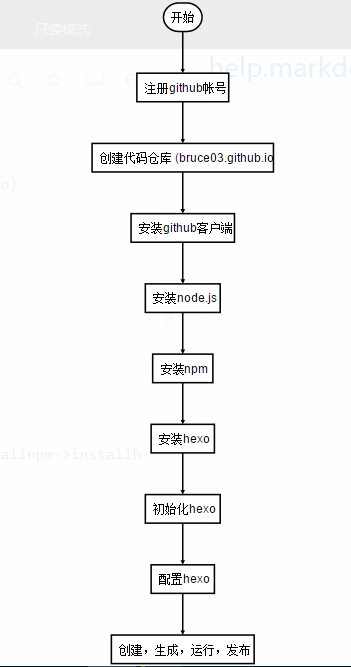

hexo + github 搭建静态博客
安装git
下载安装
安装Node.js
下载安装
安装npm
创建一个目录存放npm源码。（直接安装的话会有源的问题）
在此目录下打开gitbush
下载源代码：
1
git clone --recursive git://github.com/isaacs/npm.git
运行
1
2
3D:\>cd npmjs
D:\npmjs>node cli.js install -gf // 安装完成后要path路径
npm -v //查看版本
安装hexo
1 | npm install -g hexo |
搭建blog
创建项目
打开cmd1
2
3
4
5e: //切换到epan
mkdir hexo // 创建文件夹
cd hexo // 进入文件夹
hexo init // 初始化
hexo s // 本地运行写一篇blog
1 | hexo new my first blog |
- 生成bolg
1 | heox g // 生成 |
- 配置
在生成之前需要配置远程地址等非必要信息1
2
3
4
5
6
7
8
9title: Bruce's Blog
subtitle: a monkey
description: blog
author: Bruce He
deploy:
type: git
repository: https://github.com/bruce03/bruce03.github.io.git
branch: master
GitHub 配置
1. 注册帐号
用户名+密码
- 本地安装客户端
- 添加本地电脑的sshkey
让本地git项目与远程的github建立联系要用SSH keys。
检查SSH keys的设置
首先我们需要检查你电脑上现有的ssh key：1
$ cd ~/.ssh 检查本机的ssh密钥
如果提示：No such file or directory 说明是第一次使用git。
生成新的SSH Key：1
2
3
4
5
6
7
8
9
10
11
12$ ssh-keygen -t rsa -C "邮件地址@youremail.com"
Generating public/private rsa key pair.
Enter file in which to save the key (/Users/your_user_directory/.ssh/id_rsa):<回车就好>
// 1: 邮箱地址要输入自己的邮箱地址；
// 2: 此处的「-C」的是大写的「C」
// 然后系统会要你输入密码：
Enter passphrase (empty for no passphrase):<输入加密串>
Enter same passphrase again:<再次输入加密串>
//在回车中会提示输入一个密码，这个密码会在提交项目时使用，如果为空的话提交项目时则不用输入。这个设置是防止别人往你的项目里提交内容。
添加SSH Key到GitHub
- 打开本地C:\Users\username.ssh\id_rsa.pub文件。此文件里面内容为刚才生成人密钥。如果看不到这个文件，你需要设置显示隐藏文件。准确的复制这个文件的内容，才能保证设置的成功。
- 登陆github系统。点击右上角的 Account Settings—>SSH Public keys —> add another public keys
- 把你本地生成的密钥复制到里面（key文本框中）， 点击 add key 就ok了
测试1
$ ssh -T git@github.com
设置用户信息
现在已经可以通过SSH链接到GitHub了，还有一些个人信息需要完善的。
Git会根据用户的名字和邮箱来记录提交。GitHub也是用这些信息来做权限的处理，输入下面的代码进行个人信息的设置，把名称和邮箱替换成自己的，名字必须是真名，而不是GitHub的昵称。1
2$ git config --global user.name "bruce03"//用户名
$ git config --global user.email "3320425386@qq.com"//填写自己的邮箱
4. 新建 repositories（仓库）
bruce03.github.io
5. 常用命令
1 | git init // 初始化项目 |
blog 头部配置
1 | title: postName #文章页面上的显示名称，可以任意修改，不会出现在URL中 |
hexo配置文件说明
1 | # Hexo Configuration |
http://www.jianshu.com/p/05289a4bc8b2
https://www.zybuluo.com/mdeditor?url=https://www.zybuluo.com/static/editor/md-help.markdown
1 | st=>start: 开始:>https://github.com |
